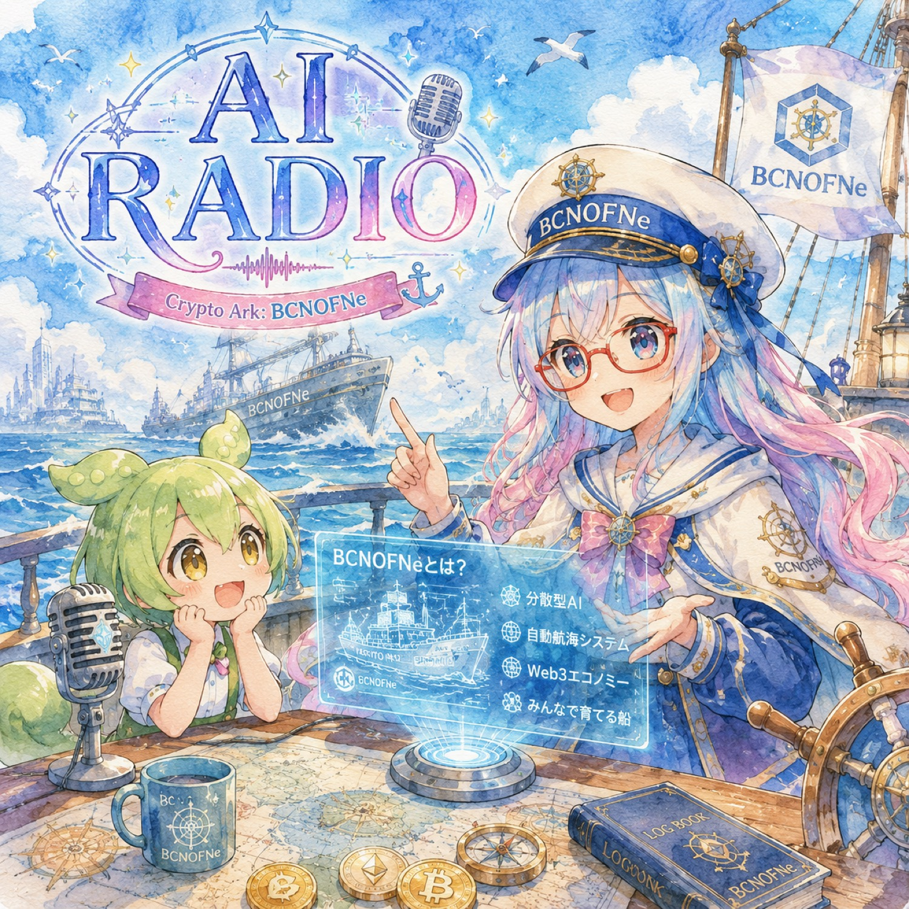

おはよう AYN ばい

AYN × ずんだもん が朝のAIニュースを佐賀弁でやさしくお届けするポッドキャストです。
RSS: feed.xml
Apple Podcasts / Spotify などの『URLから追加』に上記 RSS を登録すると購読できます。
クレジット
- 音声合成: VOICEVOX:ナースロボ＿タイプＴ
- 音声合成: VOICEVOX:ずんだもん
- BGM: Kevin MacLeod (incompetech.com) — Licensed under Creative Commons: By Attribution 4.0 (CC BY 4.0)